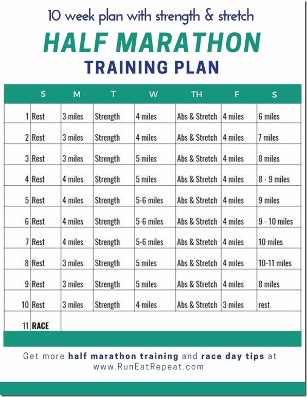
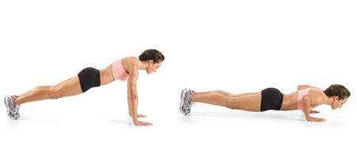
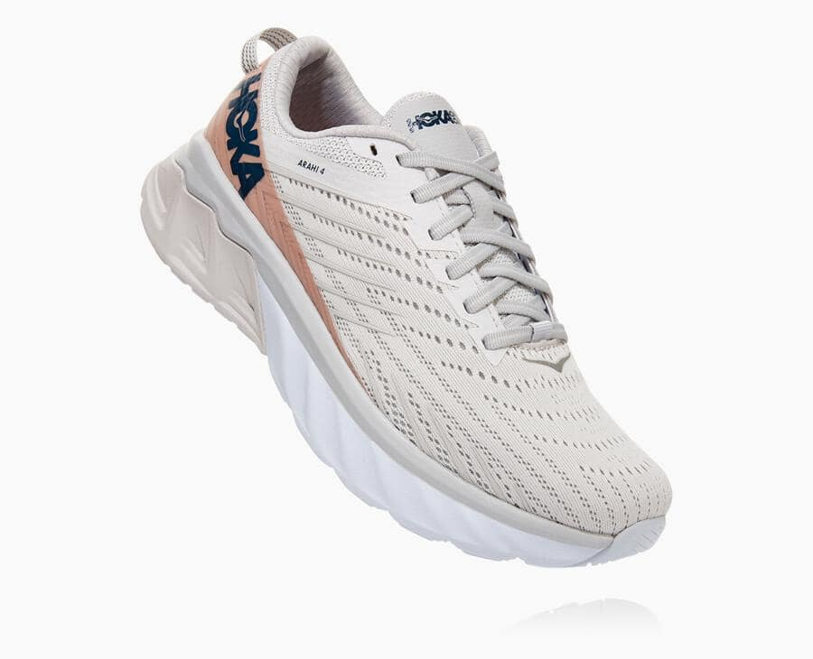
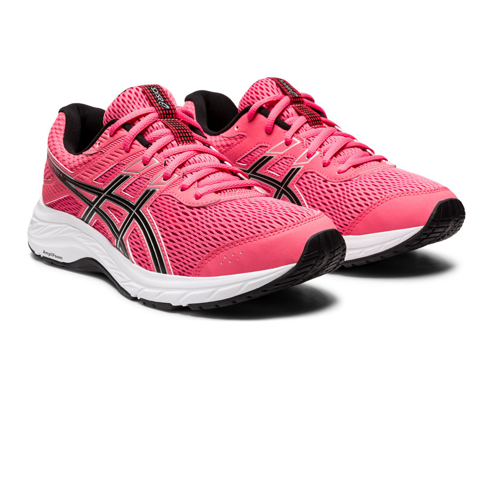
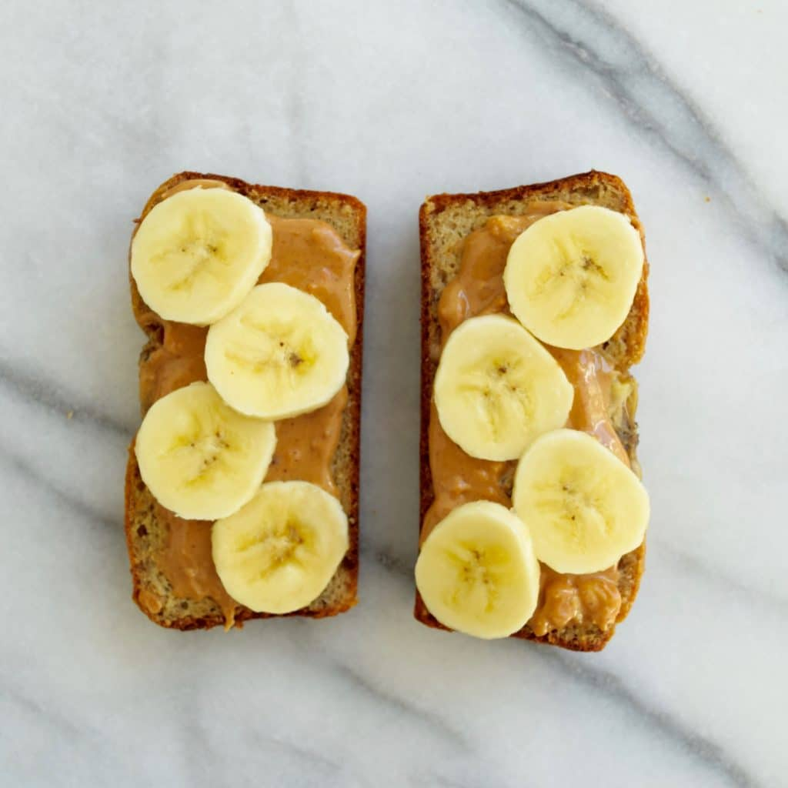

Sara's Running Blog
Running Tips and Tricks
This webpage includes articles about many different aspects of running and advice that I have gathered for new runners. As a person who has been an avid runner for over 8 years, I have compiled things that I learned during my running experience.
Training Plans
There are many training plans on the internet for different races for anyone who may want to run a 5k, 10k, 10Miler, Half Marathon, Marathon, etc.
There are different plans for everyone depending on your current running abilities and how long you want to train for.
You can alter any training plan you see online to fit your specific needs.
One pattern seen on many training plans is to mix in runs and cross training workouts (any other exercise that isn't running) during the week, and then dedicate one day per week as your 'long run' which will increase in mileage each week.
The training plan I used to train for Virginia Tech's Half Marathon:
Strength Exercises
It is important to do strength exercises along with running to build up your muscles.
I do 3 days a week of strength training: one leg workout, one arm workout, and one full-body workout. I would recommend doing at least 2 days of strenth training a week. I also do ab workouts at least 3 days a week to strengthen my core.
All of these strength workouts will make running easier.
Some basic strength moves are:
- Legs: Squats and lunges
- Arms: Pushups and bicep curls 
- Full Body: Burpees
- Abs: Crunches and Planks


Running Shoes
Selecting the proper running shoe is extremely important to prevent injury. In the past I have bought the Arahi 4 which is a sneaker made by Hoka. These shoes were very light weight and had a ton of support.
I have also bought the Gel-Contend 6 sneakers made by Asics which were also a great shoe. I would recommend either of these two brands for running sneakers.
Hoka Arahi 4:
Asics Gen-Conten 6:
Other running sneaker brands I recommend:
- Nike
- New Balance
- Under Armour
Nutrition
Nutrition is an extremely important part of fueling your body for running. Making sure you eat the proper amounts of protein, fat, and carbohydrates for your body will keep your body energized during your runs.
There are many application to consider for tracking your nutrition:
Healthy snacks
Some of the best snacks to eat pre run are peanut butter, bananas, bread, greek yogurt, berries, and nuts.
Some of the best snacks to eat post run are low fat chocolate milk, lean proteins (such as turkey) and vegetables.
Some people choose to drink protein shakes post ru which is great for muscle recovery.
I use Whey protein powder, specifically My Protein brand.
My favorite flavor is Choclate Brownie. It is good when blended into a shake with ice, almond milk, and peanut butter or added in iced coffee.